Technical description · TS.00.000 TD
TeleSAPRParametric CAD system for parts, assemblies and drawings
A sketch is held by dimensions and constraints. A solid is built from sketches feature by feature, with exact curved surfaces. Change one dimension and the part, the assembly and the drawing sheet follow. Every command is also a call in a Go script.
ExperimentalNot for sensitive or critical work.
Files and scripts may break between versions.

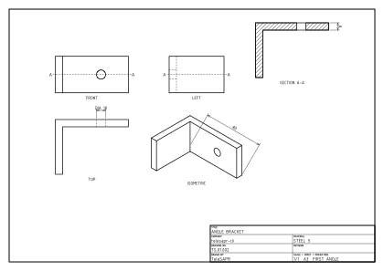
telesapr-cli export-drawing from
an 80-line script.
Nothing on it was drawn by hand.| Designed | TeleSAPR authors | TeleSAPRParametric CAD system Technical description |
TS.00.000 TD | ||
|---|---|---|---|---|---|
| Checked | make ci | Lit. | Sheet | Sheets | |
| Norm. contr. | golangci-lint | E | 1 | 1 | |
| Licence | GPL-3.0-or-later | ТелеСАПР | |||
1 Purpose and scope
1.1 TeleSAPR is for designing mechanical parts that are made: turned, milled, printed, cut from sheet. It suits parts whose sizes will change, families of parts driven by a table of parameters, and assemblies of linked parts.
1.2 The work is done in a window, from a script, from the command line, or by an AI model through MCP. All four reach the same model by the same entry points, so a part made one way can be changed another.
1.3 TeleSAPR began as a port of SolveSpace
from C++ to Go and is now a separate project, with its own kernel, features and file
format, .tlspr. SolveSpace's .slvs files are imported.
| 103 | example scripts, each run by a test and built into the program |
| 8 | screw thread series, from metric M1 to buttress inch |
| 14 | export formats, from STEP and PDF to G-code |
| 8 | MCP tools and 5 prompts for an AI model |
| 3 | operating systems, and a web browser |
| 0 | accounts, API keys, licence servers |
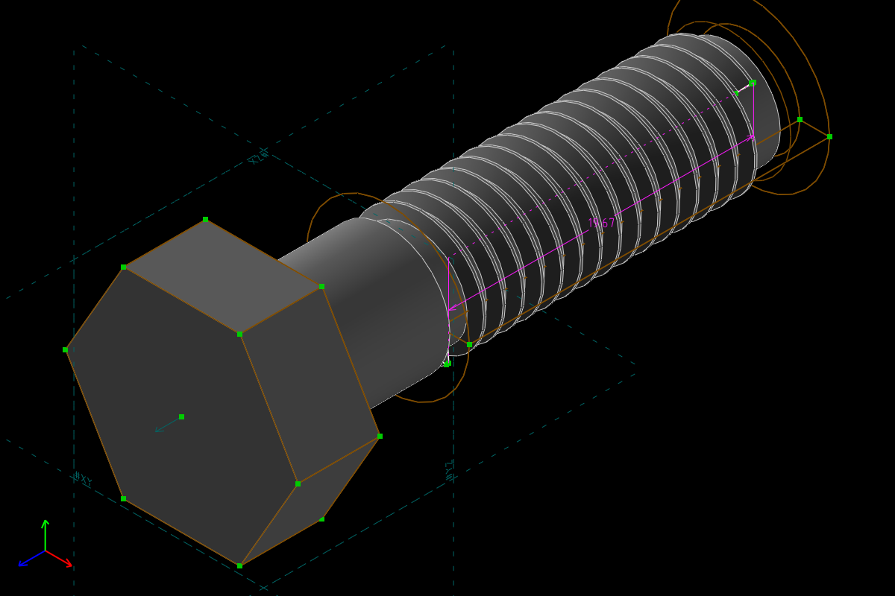


2 Album of samples
Twelve parts from examples/scripts.
Each sheet is the program's own output: the script builds the model, and
telesapr-cli export-drawing lays out the views in first angle projection at a
standard scale and fills in the title block. Select a sheet to open it at full size.

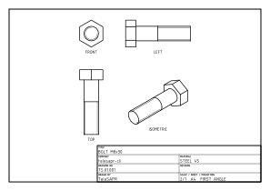
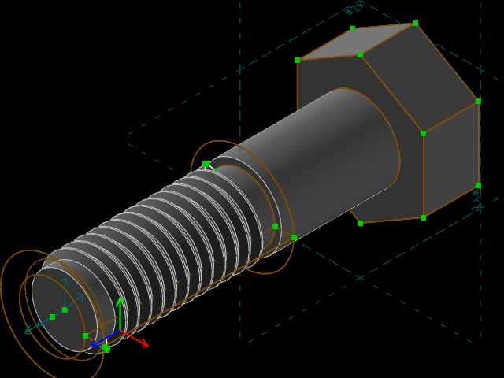

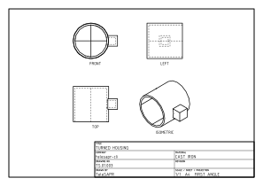
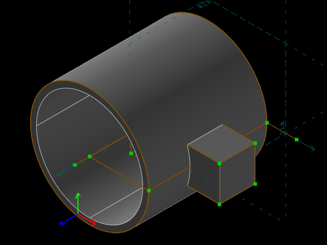

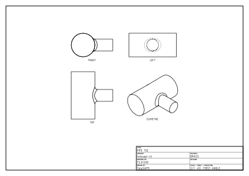
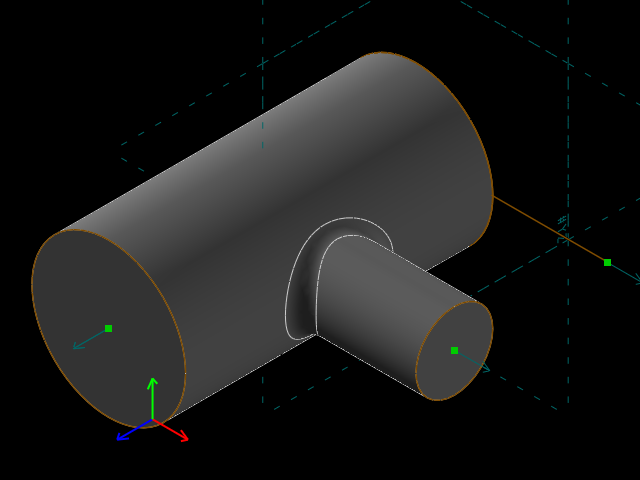

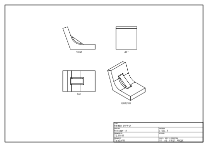
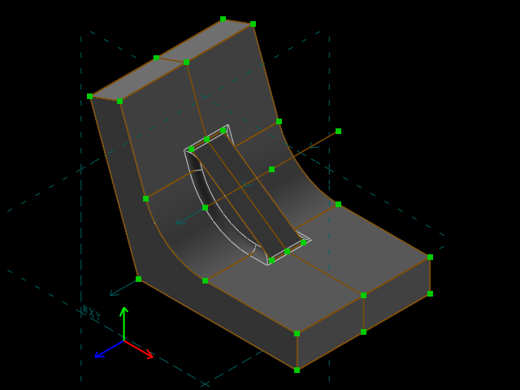

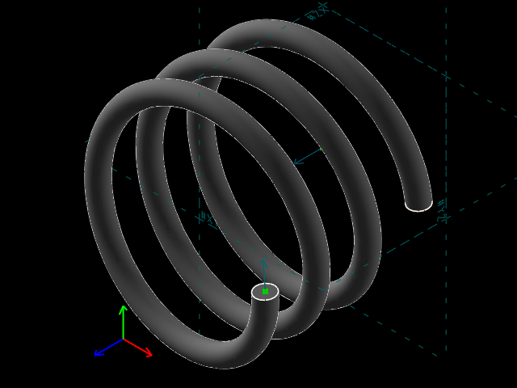

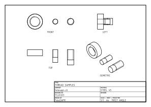
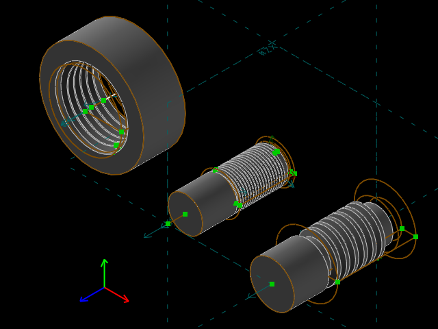

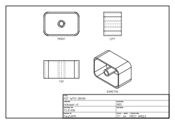
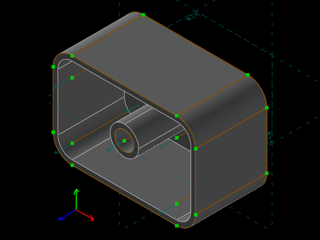

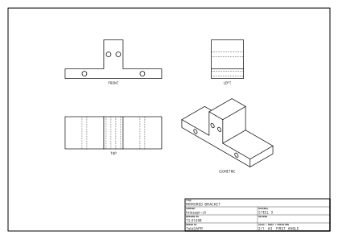
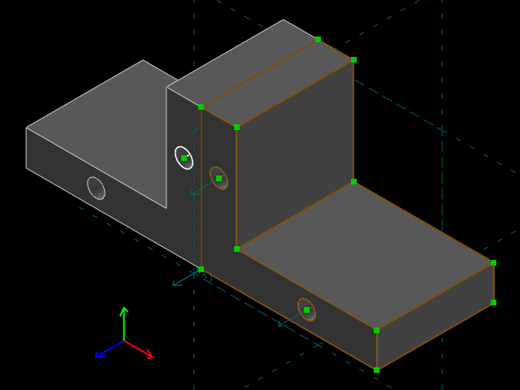

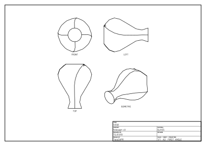
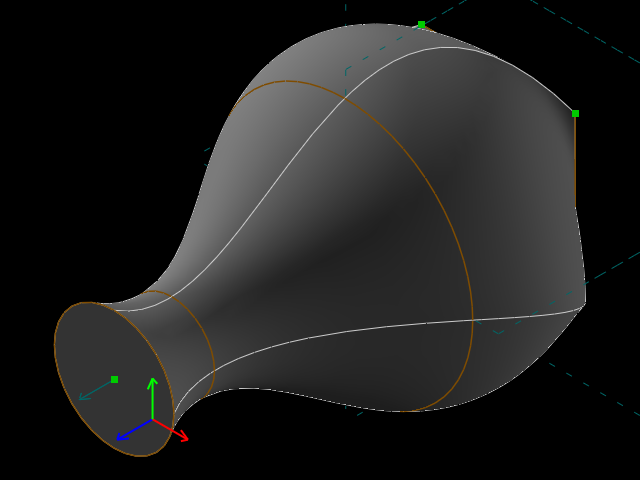

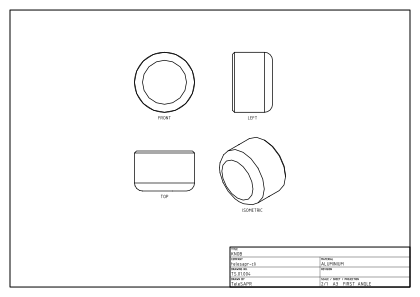
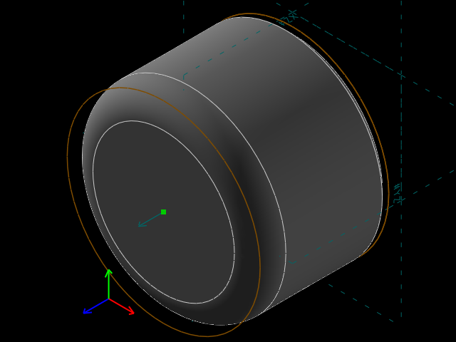

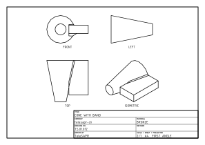
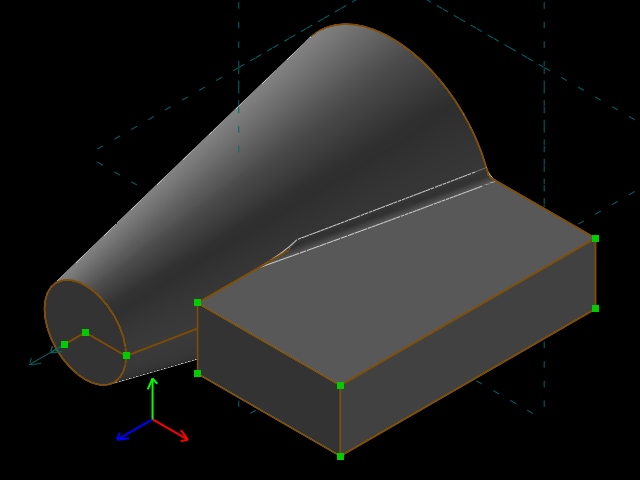

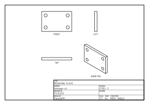
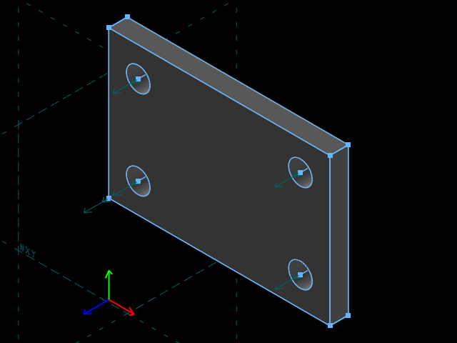
3 Composition
What the system holds, by menu. The guide has a page for each item, built on an example script, with the steps in the window and the calls in a script.
| Pos. | Item | What it does | Guide |
|---|---|---|---|
| 1 | Sketch | Lines, rectangles, circles, arcs, tangent arcs, cubic splines and text in a workplane or in 3D. Entities are coloured by how free they are. Conflicting constraints are marked. | Drawing |
| 2 | Constrain | Distance, diameter, angle, length ratio, equal, parallel, perpendicular, tangent, symmetric, point on line or face. A dimension can carry a minimum and a maximum. | Constraints, Limits |
| 3 | Parameters | Named values and expressions (height = width*2/3) that drive dimensions, depths, angles and radii. Configurations are sets of values, one active. | Parameters |
| 4 | Extrude, Lathe, Revolve | One-sided or two-sided, with a draft angle. Combined as union, difference or intersection. | Two-sided, Draft |
| 5 | Sweep, Loft | A profile along lines, arcs, cubics or a helix, with twist. Ruled and smooth lofts through profiles, guided or closed into a ring. | Sweep, Loft |
| 6 | Fillet, Chamfer | Edges and corners, each edge with its own radius or two distances. A rolling ball between curved faces. Mitres where chains meet and at the corners of a pocket's rim. | Fillet, Chamfer |
| 7 | Shell, Mirror, Pattern, Wrap | Hollowing to a wall thickness with chosen faces open. Mirror about a face. Copies along a path. A sketch raised on or sunk into a cylinder or cone. | Shell, Mirror, Pattern, Wrap |
| 8 | Screw thread | Modelled or cosmetic, on a rod or in a hole, with run-outs and tolerance classes. Edited as one feature. It follows its face when the part changes length. | Threads |
| 9 | Edges and faces by name | Any edge or face of a solid can be picked, also where no sketch entity draws it. It is saved by a name that holds when the model before it changes. | Sketch on a face |
| 10 | History | Groups moved up and down, suppressed with what uses them. A deletion lists what it took. A broken reference is named, not silently dropped. | History |
| 11 | Assembly | Linked .tlspr and STEP parts with configurations. Named datums mated by name, a screw mate, a bill of materials, mechanisms (experimental). | Datums, Bill, Mechanisms |
| 12 | Analyze | Check Solid (closed, no naked edges), volume, mass and centre of mass by density, clearance between parts, wall thickness, section view, measuring. | Check, Mass, Clearance |
| 13 | Drawing sheet | A4 to A0, Letter, Tabloid. Standard views in first or third angle at a standard scale, sections and details by letter, dimensions that follow the model, a title block. | Drawings |
| 14 | Script, AI | A Go console in the window, script files with a form for their values, a library of your packages, the model written back as its script, and an MCP server. | Scripts, AI |
4 Technical data
| Designation | Thread |
|---|---|
M8, M8x1 | ISO metric, coarse pitch or the pitch given |
M16xPh3P1.5 | ISO metric, 1.5 mm pitch, 3 mm lead (two starts) |
Tr20x4, Tr20x8(P4) | ISO metric trapezoidal, 30° |
1/4-20 UNC, #10 UNF | unified inch |
1/4 BSW, 3/8 BSF | Whitworth, 55° |
G1/2, G1 1/2 | parallel pipe (BSP, ISO 228-1) |
1/2-10 ACME, 1/2 ACME-2G | general purpose ACME, 29° |
S20x4, S40x14(P7) | metric buttress (DIN 513), flanks 3° and 30° |
1-12 BUTT, 2-4 BUTT-2A | buttress inch (ASME B1.9), flanks 7° and 45° |
…-LH | any of them left-hand |
| Data | Read | Written |
|---|---|---|
| Model | .tlspr, .slvs | .tlspr (text), .tlsprz (model packed with what it links) |
| Exact surfaces | STEP, as a reference mesh or as a solid | STEP, one surface per face |
| Mesh | — | STL, 3MF and GLB with colours, OBJ, VRML, three.js |
| Drawing, view, section | — | PDF, SVG, DXF, EPS, PS, HPGL, G-code, STEP |
| Wireframe | — | STEP, DXF |
| Model as a program | Go script | Go script that builds it again |
| Table | — | bill of materials, CSV |
Mesh quality: presets draft, standard,
fine, or a chord tolerance in mm, an angular tolerance in degrees and a
segment limit. --strict writes no file if the mesh has naked edges.
5 Scripting and automation
5.1 A script is an ordinary Go program. The calls sit where the window's
commands do: doc.Sketch holds the Sketch menu, doc.Constrain
the Constrain menu, doc.Features the Features menu. Lengths are mm, angles
degrees.
doc := api.Current()
doc.Params.Set("width", "60")
doc.Params.Set("height", "width*2/3")
doc.Params.Set("margin", "height/5")
doc.Params.Set("hole", "margin*0.8")
sides := doc.Sketch.Rect(api.V(0, 0, 0), api.V(60, 40, 0))
doc.Constrain.Coincident(sides[0].Start(), doc.Origin())
doc.Constrain.Length(sides[0], 60).SetExpr("width")
doc.Constrain.Length(sides[1], 40).SetExpr("height")
for i := 0; i < 4; i++ { // a hole in each corner
h := doc.Sketch.Circle(corners[i], 3)
doc.Constrain.Diameter(h, 6).SetExpr("hole")
doc.Constrain.Distance(h.Center(), sides[i], 8).SetExpr("margin")
doc.Constrain.Distance(h.Center(), sides[(i+3)%4], 8).SetExpr("margin")
}
body := doc.Features.Extrude(5, "plate")
r := body.Analyze().Check()
fmt.Printf("%s: %d faces, %.1f mm³, sound %v\n", body, r.Faces, r.Volume, r.Sound())$ telesapr-cli run plate.go
g003-plate: 10 faces, 11359.8 mm³, sound true
width = 60 = 60
height = width*2/3 = 40
margin = height/5 = 8
hole = margin*0.8 = 6.4
$ telesapr-cli run plate.go 90
$ telesapr-cli export-drawing -o plate.pdf plate.tlspr
$ telesapr-cli export-mesh --quality fine --strict -o plate.stl plate.tlspr5.2 In the window, Script > Show Console runs Go a line at a time on the
open drawing. Each line is one step of undo. help("Features > Fillet Edges")
says what a script calls in place of a menu entry; help("example bolt")
shows an example.
5.3 An AI model draws in the window you have open, through the Model Context Protocol. TeleSAPR brings no model and needs no key: the client does. The model writes scripts, reads the drawing in words, looks at pictures of it and measures the solid.
$ claude mcp add telesapr -- telesapr-cli mcpapi_help | the scripting interface and the examples |
get_drawing | groups, constraints, faces and edges by name |
run_script | Go statements, one step of undo |
render | a picture, also cut by a section |
measure | volume, centre of mass, bounds, soundness |
export, open, list_files | files, within the folders allowed |
6 Delivery set
Each release carries telesapr, the window, and
telesapr-cli, the command line.
| System | Processor | Package | Drawn with |
|---|---|---|---|
| Linux | x86-64 | .deb, .rpm, .tar.gz with desktop entry and MIME type | OpenGL on X11, software without |
| Windows | x64, arm64 | -setup.exe installer, .zip | OpenGL on x64, software on arm64 |
| macOS 11 and later | Apple silicon, Intel | .dmg with TeleSAPR.app (not notarized: Control-click, Open) | OpenGL, software if that fails |
| Web browser | WebAssembly | nothing to install; files stay in the browser's storage | software; no AI connection |
| Source | — | Go 1.27, make build | — |
Warning. TeleSAPR is experimental. It may have bugs, and it may change in ways that break your files, scripts and workflow. It is developed and used on Linux; the Windows and macOS builds pass the quick tests before they are packaged.